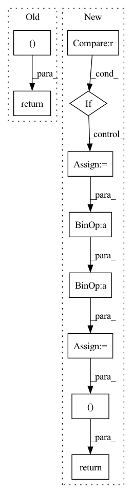

Pattern ID :3116

Before Change
mel_loss + duration_loss + pitch_loss + energy_loss
)
return (
total_loss,
mel_loss,
pitch_loss,
energy_loss,
duration_loss,
)
After Change
alpha = 1
D_s_loss = D_t_loss = torch.tensor([0.], device=mel_predictions.device, requires_grad=False)
if D_s is not None and D_t is not None:
D_s_loss = self.mse_loss(D_s, torch.ones_like(D_s, requires_grad=False))
D_t_loss = self.mse_loss(D_t, torch.ones_like(D_t, requires_grad=False))
alpha = self.alpha
recon_loss = alpha * (mel_loss + duration_loss + pitch_loss + energy_loss)
total_loss = (
recon_loss + D_s_loss + D_t_loss
)
return (
total_loss,
mel_loss,
pitch_loss,
energy_loss,
duration_loss,
D_s_loss,
D_t_loss,
)
In pattern: SUPERPATTERN
Frequency: 3
Non-data size: 10
Instances
Fragment ID: 16757055
Project Name: keonlee9420/stylespeech
Commit Name: b18d6280abb4063fdeab58238ec574166dd405f0
Time: 2021-06-13
Author: keonlee9420@gmail.com
File Name: model/loss.py
M Class Name: StyleSpeechLoss
N Class Name: MetaStyleSpeechLossMain
M Method Name: forward(3)
N Method Name: forward(3)
M Parent Class: nn.Module
N Parent Class: nn.Module
M File Name: model/loss.py
N File Name: model/loss.py
M Start Line: 75
M End Line: 91
N Start Line: 78
N End Line: 104
'>
Before Change
out = torch.matmul(w.transpose(1, 2), encoder_outputs)
return out, w
class DurationPredictor(nn.Module):
Duration Parameter Predictor
After Change
w = self.get_alignment_energies(g, t) // [B, L, T]
if mask is not None:
w = w.masked_fill(mask.unsqueeze(-1), 0.0)
attn = w / (torch.sum(w, dim=1).unsqueeze(1) + 1e-8) // [B, L, T]
out = torch.bmm(attn.transpose(1, 2), encoder_outputs)
return out, attn
class DurationPredictor(nn.Module):
Duration Parameter Predictor
'>
Fragment ID: 16757048
Project Name: keonlee9420/wavegrad2
Commit Name: 523ec241c64ab635218f32d071fd85fbc469e178
Time: 2021-07-13
Author: keonlee9420@gmail.com
File Name: model/modules.py
M Class Name: GaussianUpsampling
N Class Name: GaussianUpsampling
M Method Name: forward(4)
N Method Name: forward(4)
M Parent Class: nn.Module
N Parent Class: nn.Module
M File Name: model/modules.py
N File Name: model/modules.py
M Start Line: 115
M End Line: 135
N Start Line: 120
N End Line: 134
'>
Before Change
lsnr, h_snr = self.gru_snr(x_rnn.transpose(1, 2).flatten(2, 3), h_snr)
lsnr = self.fc_snr(lsnr) * self.lsnr_scale + self.lsnr_offset
m = self.conv_out(x1)
return m, lsnr, h, h_snr
class SpectralRefinement(nn.Module):
def __init__(self, kernel_size_t: int = 1, dilation: int = 1):
After Change
// input shape: [B, 1, T, F]
x0 = self.conv_in(input) // [B, C, T, F]
x1 = self.down_block(x0) // [B, C, T, F/2]
if h_prev is not None:
assert self.conv_hprev_down is not None
h_prev = self.conv_hprev_down(h_prev)
x1 = x1 + h_prev
x_rnn, h = self.gru(x1, h)
x_rnn = x_rnn + x1
x1 = self.up_block(x_rnn)
x1 = x1 + x0
m = self.conv_out(x1)
return m, x_rnn, h
def _init_weights(module, name=None, head_init_scale=1.0):
if isinstance(module, nn.Conv2d):
'>
Fragment ID: 16757076
Project Name: rikorose/deepfilternet
Commit Name: 656008165bd9057fda5faa2395f3b0a7d2f9f02a
Time: 2022-04-12
Author: h.schroeter@pm.me
File Name: DeepFilterNet/df/multistagenet.py
M Class Name: ErbStage
N Class Name: FreqStage
M Method Name: forward(4)
N Method Name: forward(4)
M Parent Class: nn.Module
N Parent Class: nn.Module
M File Name: DeepFilterNet/df/multistagenet.py
N File Name: DeepFilterNet/df/multistagenet.py
M Start Line: 157
M End Line: 167
N Start Line: 388
N End Line: 402